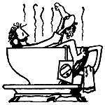

Regular bathing is, of course, necessary to good health. Aside from its role in personal hygiene, water opens our pores, tones our skin, increases our circulation, and allows our bodies to "breathe".
However, when you add herbs to your bathwater, you're providing the liquid with special soothing oils which seem to reach not only the skin, but also the muscles that lie beneath.
Therefore, don't resign yourself-or your skin and muscles-to sore stiffness or winter dryness every time you put a little extra effort into your chores or expose yourself to harsh, cold winds. Treat yourself to a soothing herbal bath instead.
Herbs, unlike commercial bath concoctions, are not simply dumped into the bathwater, since soaking in such a "stew" would leave hundreds upon thousands of little plant particles clinging to your skin (and to the tub) after your dip. Instead, prepare an infusion of the leaves and flowers.
To "cook up" your herbal concoction, you'll need an enamel-lined or glass pot with a lid. (Most herbalists claim that metal destroys the healing properties of herbs.) You'll also want to have a small strainer, a wooden spoon, a washcloth, and a rubber band or piece of string on hand.
When you've gathered up the ingredients from one of the following recipes, mix the herbs in the pot. Then add one to two quarts of boiling water (never boil the herbs themselves, but-as in making tea -pour the water over the leafy mixture) . . . cover the container . . . and let it stand for at least 20 minutes. (This is the minimum brewing time for cosmetic use, though medicinal herbs must sometimes be steeped for as much as three hours before their healing properties are fully absorbed by the liquid.)
That done, strain the tea-colored water into your bath, and-instead of throwing the herb solids away-tie the leaves securely into the washcloth (using a rubber band or string) and rub your dry skin and aching muscles with the "herbal sponge" as you bathe. Relax in the warm, scented water for 15 minutes or longer.
You can prepare a faster (but probably not quite as effective) herbal bath by tying a large handful of the dry herbs into a washcloth and placing this bundle under the hot water faucet in your tub. Let the liquid flow through the leaves as you draw your bath, and knead the bag from time to time with a wooden spoon-to release its essential oils.
There are almost endless combinations of herbs that are used for different cosmetic and healing purposes, including recipes passed down from such famous women as Madame Pompadour, Catherine the Great, George Sand, and Mary, Queen of Scots. The recipes I've listed here, however, are my own favorites . . . that have all been tested and found to be soothing to both the skin and the whole body.
In ancient Rome (and who knew more about baths than the Romans!), sage was considered one of the most important bath herbs, and was often used to ease the fatigued muscles of both nobles and peasants. For this reason, I've included sage in all my recipes.
For an "Ohhh, My Aching Back" bath, mix 2 parts of sage with 1 part each of mugwort, wormwood, comfrey leaf, white oak bark, strawberry leaf, and German chamomile. Prepare the mixture by any method you prefer, but-as you bathe be sure to rub your back with the herb-filled washcloth.
A "Sweet Bath" can be made from 1/4 cup of sage, 1/4 cup of mugwort, and 1/8 cup each of sweet fennel, elder flowers, jasmine, and spearmint . . . plus a pinch of ground thyme. Mix the ingredients well, and use only 1/2 cup of herbs per bath. (The jasmine and spearmint are added only for their scent, so they can be omitted, and-if you have oily skin-you might want to substitute lemon grass for the elder flowers.)
I call one of my favorite soaks "The Sagey Bath". It's made from 1/3 cup of sage, 1/4 cup of German chamomile, 1/4 cup of comfrey leaves, 1/8 cup of rosemary, and a pinch of ground thyme. To prepare it, just pour two cups of boiling water over the mixture . . . steep it for 20 minutes . . . add 1 or 2 drops of oil of sage, if desired ... and strain the liquid into the bath.
After you've tried the above recipes, you'll probably want to experiment with a few herbal favorites of your own. One of the best books to guide you in this matter is The CompleteHerbal Guide to Natural Health and Beauty by Dian Dincin Buchman (Doubleday), which is available from Mother's Bookshelf (P.O. Box 70, Hendersonville, North Carolina 28739) for $2.95 plus 95 cents shipping and handling.
Hot water and herbs: I can't imagine a more pleasant-or painless-route to beauty, relaxation, health ... and just plain feelin' great!
|
 |
|
|